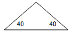

| 1. | Draw an angle from each end of the line below to make a triangle like the one on the right. Make both angles 40° |
 |
| 2. | Use the protractor to measure the third angle of the triangle you drew. When you add all 3 angles, what total do you get? |